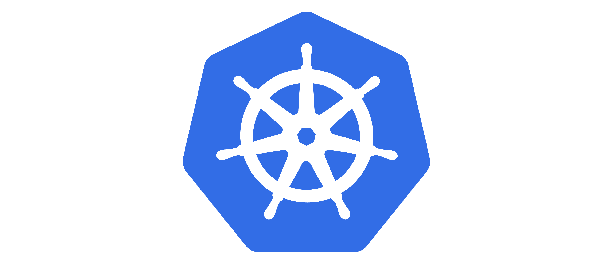
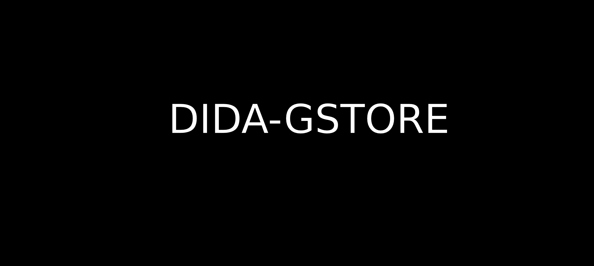

Secure Child Locator
Child localization in outdoor and indoor spaces.
A solution for smartphone or smartwatch users that enables the tracking of children only by
their authorized legal guardians and not by anyone else.
The solution operates outdoors, using GPS, and also indoors, where GPS does not work. Indoor
location relies on Wi-Fi fingerprinting.

TODO Application
TODO application in a Kubernetes cluster. The project was
developed by me and my group in the context of the Management and
Administration of It Infrastructures and Services course at
IST.
The TODO List project is the realization of the deployment and provisioning of a
tiered (Frontend, Backend) microservices-based containerized Web Application on a
Public Cloud provider, in our case it was in GCP(Google Cloud Platform), resorting to the
GKE(Google Kubernetes Engine).
This application stores information in a database and can also be monitored.

DIDA-GSTORE
A simplified version of a georeplicated storage system. The system is composed of two types of
nodes: servers and
clients. The servers, collectively, keep a distributed key-value store. The clients perform
read and write operations. This project was done in the context of the Design and
Implementation of Distributed Applications course.